COS426 Assignment 1Image Processing — Batch Mode
Switch to: Interactive Editor
- (0.0) Brightness
- (0.5) Contrast
- (0.5) Gamma
- (0.5) Vignette
- (2.0) Histogram equalization
- (0.0) Grayscale
- (0.5) Saturation
- (1.5) White balance
- (2.0) Histogram matching
- (1.0) Gaussian
- (0.5) Sharpen
- (0.5) Edge detect
- (1.0) Median filter
- (2.0) Bilateral filter
- (0.5) Quantize
- (0.5) Random dither
- (2.0) Ordered dither
- (0.5) Sampling
- (1.0) Scale
- (1.5) Rotate
- (3.0) Morph
- (1.0) Art Contest
Brightness
This feature was implemented by the course staff. I used it as an example of how to loop over the pixels in an image.
Here is an example output where the image is made brigher with the luminance slider set to 0.3:
{kind=link}

Here is an example output where the image is made darker with the luminance slider set to -0.5:
{kind=link}
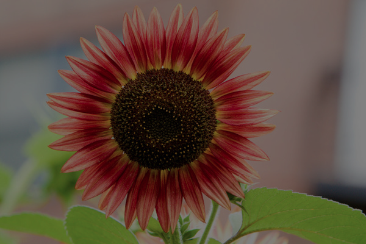
I did not encounter any particular challenges in implementing this.
Contrast
This filter was pretty simple to implement; I hard-coded "128" into the code as the halfway point (medium gray). To gain contrast for a ratio, we modify each color channel by multiplying by that ratio and medium gray.
Here's an example output when the image contrast is increased to .3.
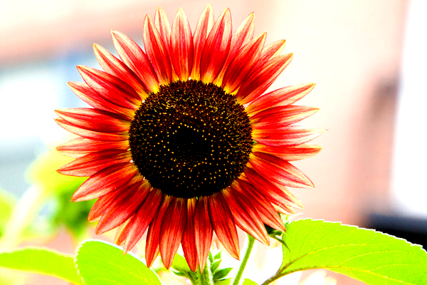{kind=link}
Here's an example output where the image contrast is decreased to -.3.
{kind=link}
Gamma
To implement gamma, I normalized the RGB colors to [0, 1], exponentiated to gamma, and then converted back.
Here's output when gamma = .5.
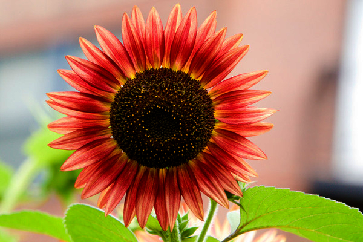{kind=link}
Here's output when gamma = -.5.
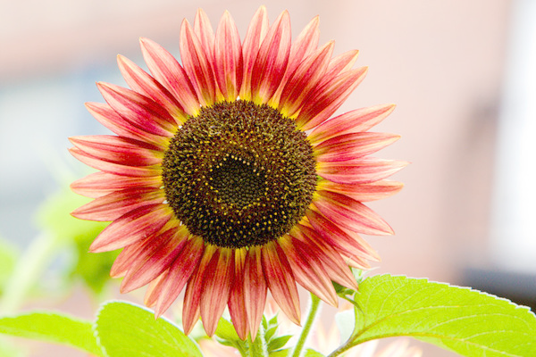{kind=link}
Vignette
For vignette, all that were not inside the inner radius were interpolated with black in some degree.
Here's an example of vignette with radius .3.
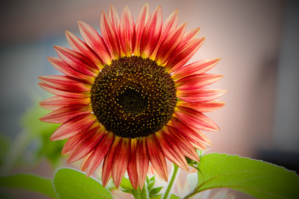{kind=link}
Here's an example of vignette with radius .7.
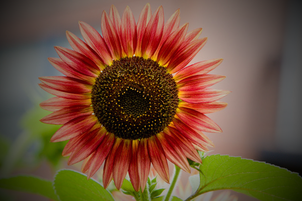{kind=link}
Histogram equalization
First, I converted to HSL and calculated the frequencies of all the luminances. I set the lowest luminance as 0 and the highest at 255, and then equalized the luminances and converted back.
Here's an example of histogram on the bridges picture.
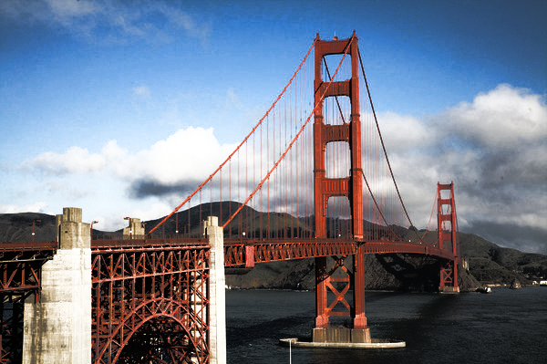{kind=link}
Grayscale
Turns the image gray by setting RGB to luminance.
Here's the flower in grayscale.
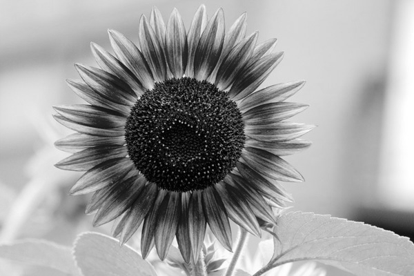{kind=link}
Saturation
Saturation adds/loses color from the photo by multiplying it by a factor of the luminance.
Here's the flower photo having more color (+.5).
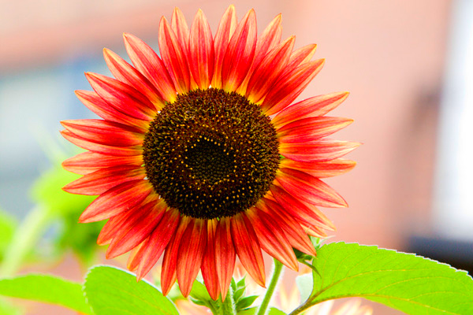{kind=link}
Here's the flower photo having less color (-.5).
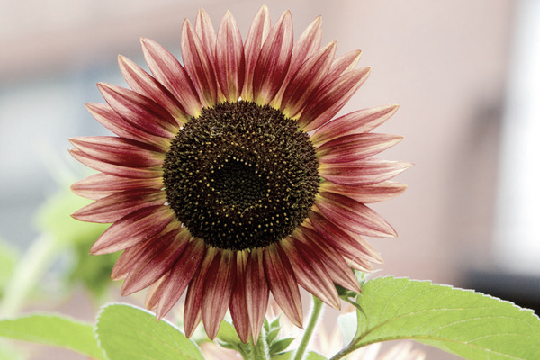{kind=link}
White balance
Converts to LMS, divides by a factor to set selected color as white, and returns.
Here's the flower photo adjusted to #f5cece.
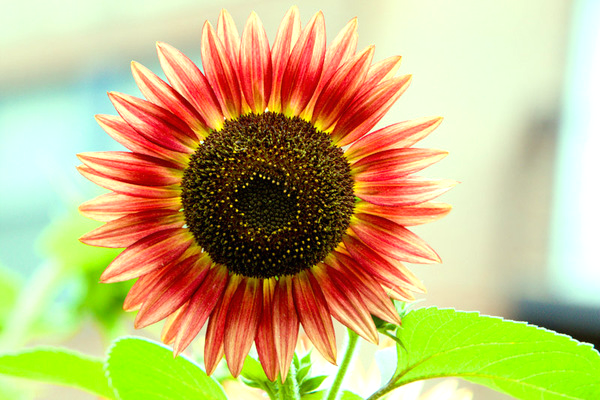{kind=link}
Gaussian
Gaussian filter blurs the photo by interpolating each pixel with its neighbors within the specified range.
Here's Gaussian with window radius 2.
{kind=link}
Sharpen
Sharpens the image by applying a matrix.
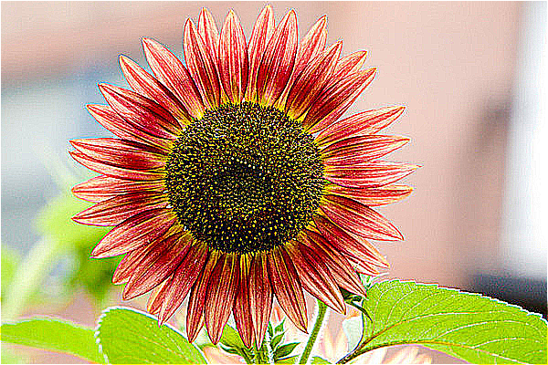{kind=link}
Edge detect
Edge detect sums the absolute value of the differences around each pixel, but is pretty much like sharpen. Also, inverts the color.
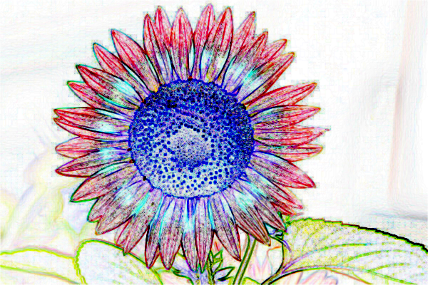{kind=link}
Median filter
Median is kind of slow because it has four loops running, but it gets an array of the current RGB values, sorts them, and makes each pixel the median of its neighbors.
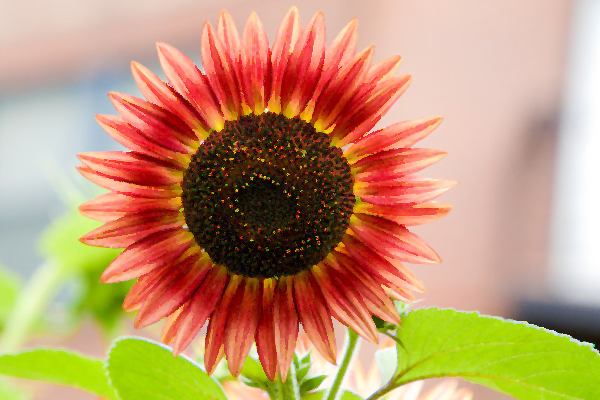{kind=link}
Bilateral filter
Bilateral was hard to implement; it's still pretty slow, despite calculating spatial factor beforehand.
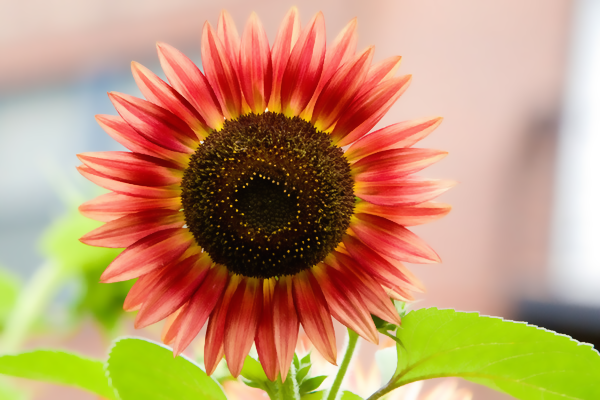{kind=link}
Quantize
Quantize separates each channel into numBits possible colors by rounding each pixel's values to the nearest threshold.
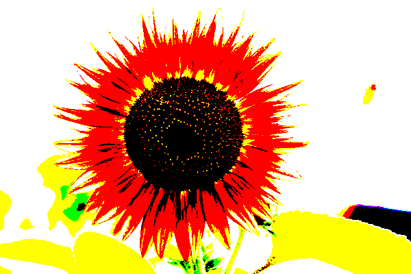 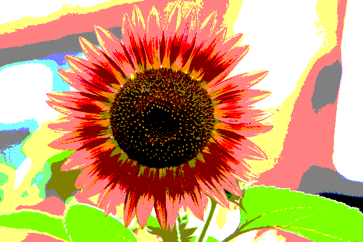{kind=link}
{kind=link}
Random dither
Random is the same as quantize, except the value to round also includes a random modifier from -1 to 1 to create noise.
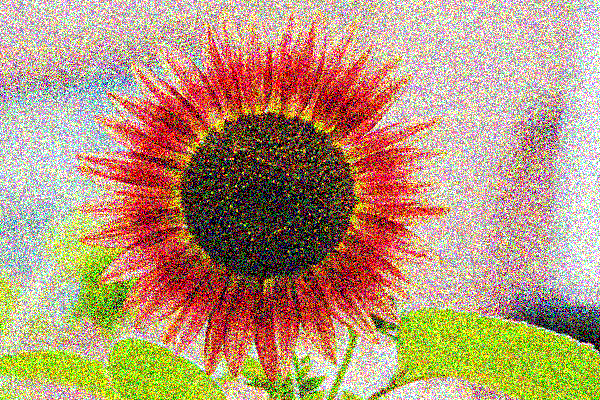 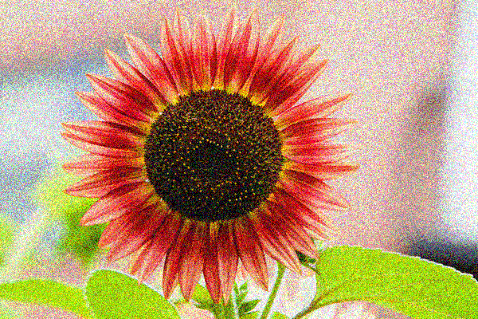{kind=link}
{kind=link}
Ordered dither
Ordered dither uses a Bayer matrix to make the dithering repetitive throughout the image.
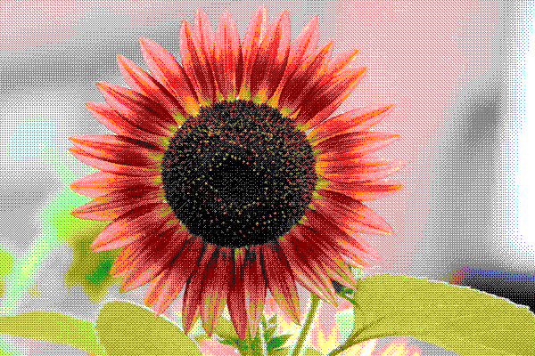 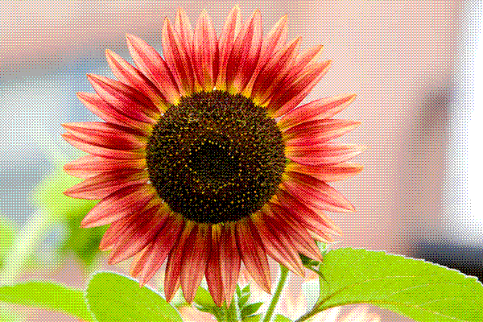{kind=link}
{kind=link}
Floyd-Steinberg dither
I tried this, but it doesn't really work. I think my math is off somewhere. (I didn't include it at the top of this page.)
If you're curious, though, you can click on this.
{kind=link}
Sampling
Bilateral sampling takes the four pixels around the given point and averages the value. Gaussian sampling uses sigma = 1 and radius = 3 to include the values of the neighbors into the value for each point.
Scale
If the ratio gets bigger, each pixel will repeat a fixed amount to increase the scale. If smaller, take every nth pixel to be in the photo.
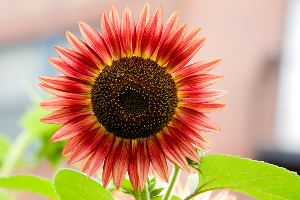{kind=link}
{kind=link}
Rotate
Rotate uses a matrix to spin the image about (0, 0), then transposes the image to remain within a fixed white bound. Little white dots randomly appear in the picture. This was hard for me to get, math-wise. I had problems transposing it so that there was just enough white space around the image.
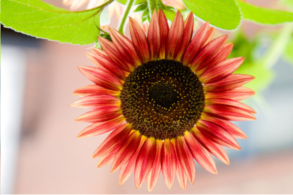 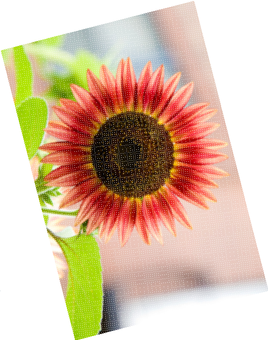{kind=link}
Morph
My morph doesn't really work; it multiplies the screen by four. But hey, the faces kind of match up!
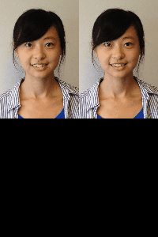){kind=link}
Art Contest
This is the concatenation of four different photos:
The original:
For the next few, I used composite filtering with a custom (but crude) alpha filter file.
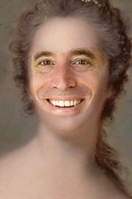 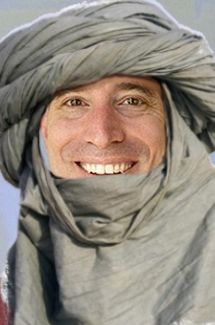{kind=link}
{kind=link}
{kind=link}
Because it seemed too complicated to take in so many arguments, I decided to just show you the separate parts and concatenate them (with labels) into this!
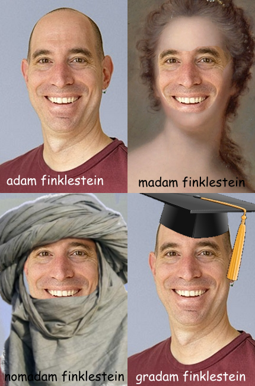Side note: I wanted to figure out morph and make Breaking Badam Finklestein, but sadly my morph isn't working. :(